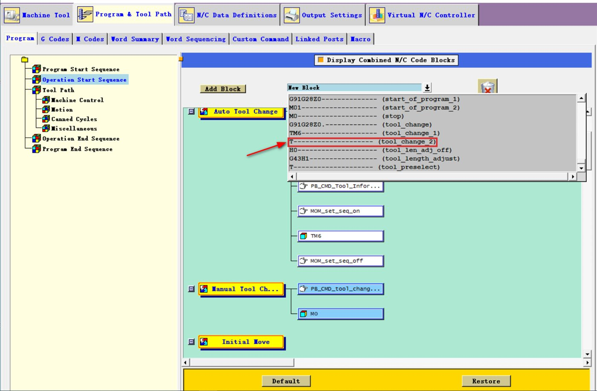
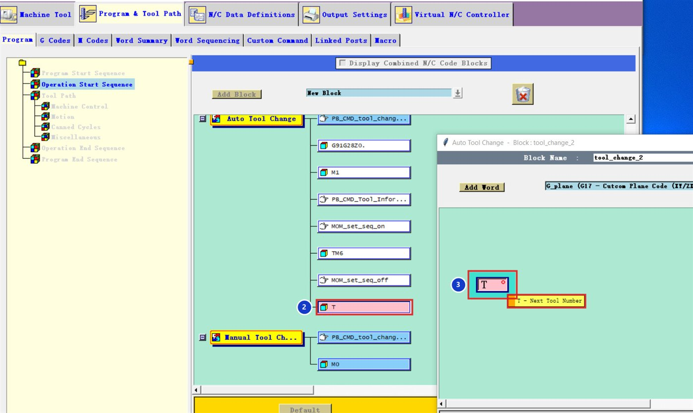
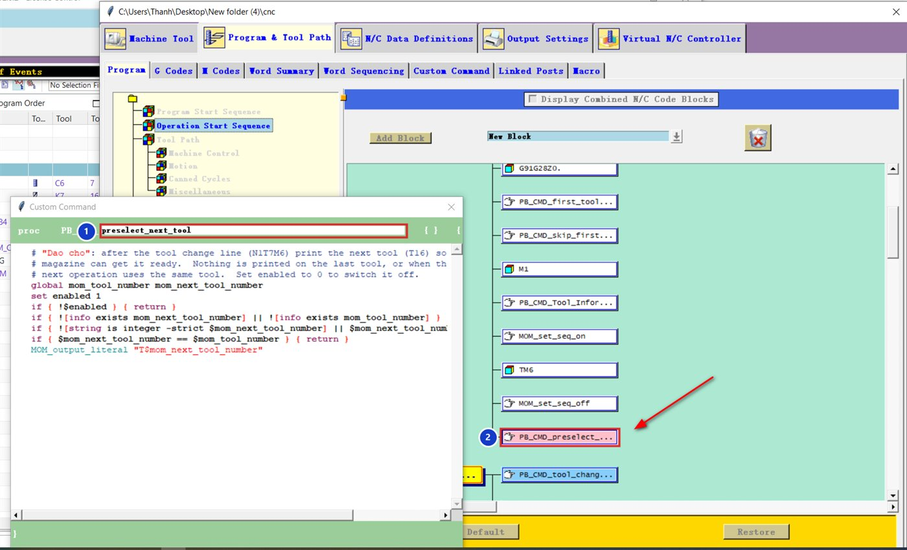

Kết quả
N1T7M6
T16
G0G90G54X0Y0
...
N2T16M6
T7
G0G90G54X0Y0Ở dao cuối, NX trả về số của dao đầu tiên nên post in T7: ổ dao chuẩn bị sẵn dao 1 cho lần chạy chương trình tiếp theo.
Tải về: code dán vào Post Builder và file NC mẫu.
Cách 1 — chỉ dùng khối có sẵn (không cần code)
Thêm khối T (tool_change_2)
Program & Tool Path → Program → Operation Start Sequence. Ở danh sách New Block, chọn khối T ---- (tool_change_2) rồi kéo vào Auto Tool Change, đặt cuối cùng (sau MOM_set_seq_off).


T ---- (tool_change_2).Kiểm tra từ T là số dao kế tiếp
Mở khối vừa thêm 2. Từ T bên trong phải là T - Next Tool Number 3, không phải số dao hiện tại.


T cuối Auto Tool Change, từ T = Next Tool Number.Cách này đơn giản nhưng dao cuối hoặc hai nguyên công cùng dao vẫn có thể in thừa một dòng T. Cần kiểm soát kỹ hơn thì dùng cách 2.
Cách 2 — Custom Command (khuyên dùng)
Tạo lệnh preselect_next_tool
Custom Command → Create, đặt tên preselect_next_tool 1, dán code dưới đây. Lệnh này không in gì khi nguyên công sau dùng lại đúng dao đang lắp.
global mom_tool_number mom_next_tool_number
set enabled 1
if { !$enabled } { return }
if { ![info exists mom_next_tool_number] || ![info exists mom_tool_number] } { return }
if { ![string is integer -strict $mom_next_tool_number] || $mom_next_tool_number <= 0 } { return }
if { $mom_next_tool_number == $mom_tool_number } { return }
MOM_output_literal "T$mom_next_tool_number"Đặt lệnh vào Auto Tool Change
Kéo PB_CMD_preselect_next_tool vào Auto Tool Change, ngay sau MOM_set_seq_off 2.


Đổi set enabled 1 thành set enabled 0, không cần xoá lệnh khỏi post.
Giới hạn
Chỉ dùng cho máy có ổ dao gọi trước được (lệnh T đứng riêng). Máy ổ dao dạng dù (umbrella) thường bỏ qua hoặc báo lỗi, hãy kiểm tra sách hướng dẫn máy.